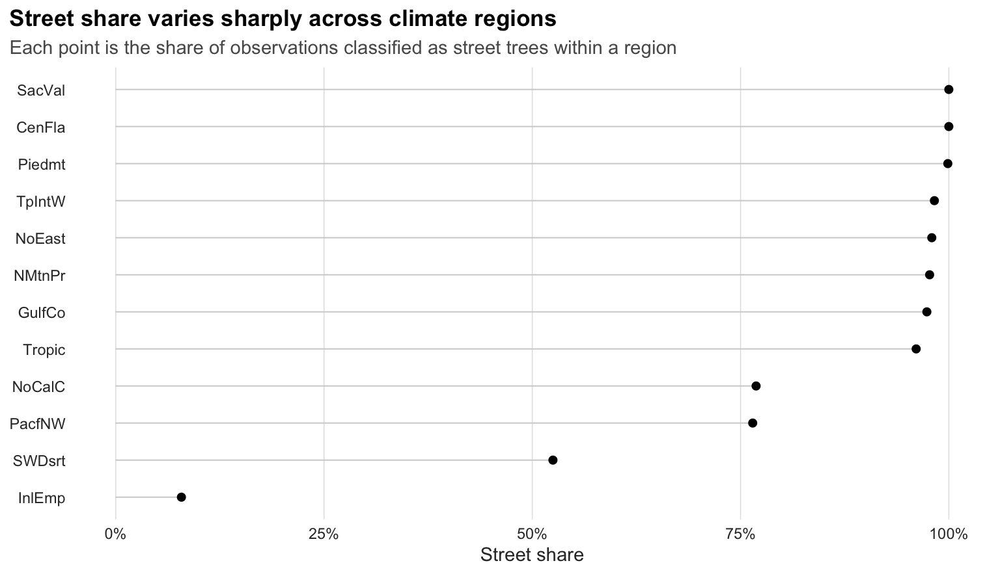
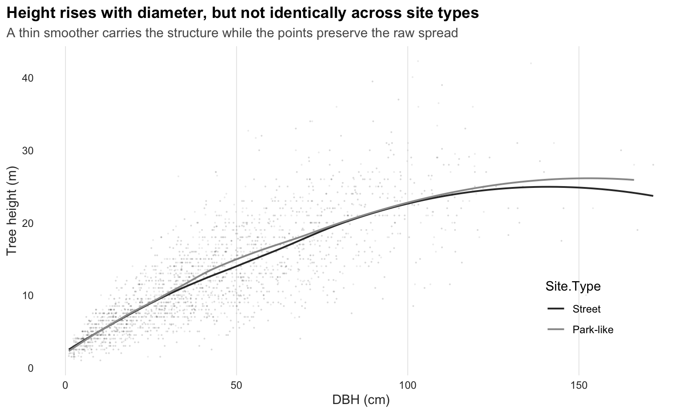
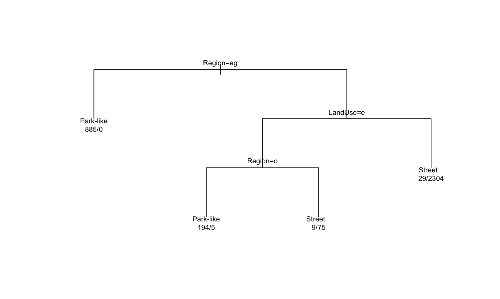
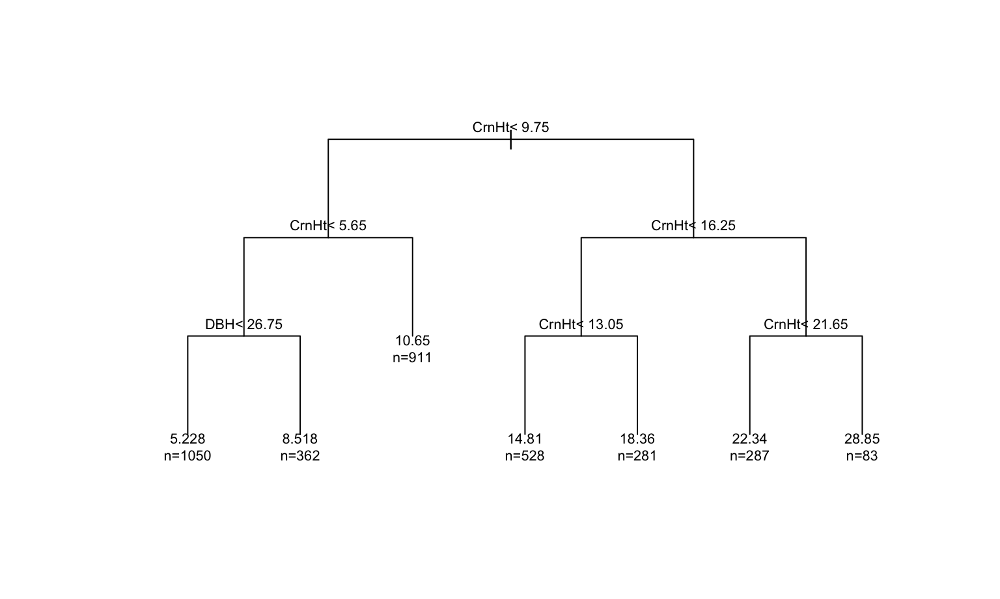
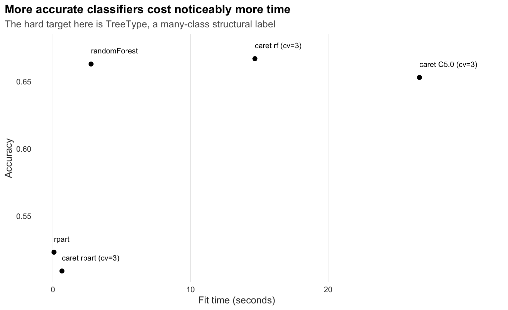

This report uses the USDA Forest Service Research Data Archive
publication Urban tree database and the local file
Data/TS3_Raw_tree_data.csv included in this folder. The
archive describes the publication as a multi-city urban tree dataset
covering more than 14,000 measured urban trees across 17 U.S. cities.
Source page: https://www.fs.usda.gov/rds/archive/catalog/RDS-2016-0005.
This archive mixes species, urban form, and tree structure in the same table. Tree methods are a natural fit because they can move between those data types without flattening the whole problem into one linear rule.
I use tree methods here to answer four practical questions:
TreeType?kable(overview, caption = "USDA urban tree data summary.")| Measure | Value |
|---|---|
| Total tree records | 14487 |
| Distinct cities | 17 |
| Distinct climate regions | 17 |
| Street trees | 8987 |
| Park-like trees | 5500 |
| Distinct tree types | 12 |
The two figures below keep the ink budget low and let the data do most of the talking. The first shows how strongly the share of street trees varies by region. The second shows a familiar forestry relationship: height rises with diameter, but the slope and spread differ across site types.
ggplot(site_mix, aes(x = Share, y = fct_reorder(Region, Share))) +
geom_segment(aes(x = 0, xend = Share, yend = Region), color = "grey82", linewidth = 0.35) +
geom_point(size = 1.8, color = "black") +
scale_x_continuous(labels = scales::percent_format(accuracy = 1)) +
labs(
title = "Street share varies sharply across climate regions",
subtitle = "Each point is the share of observations classified as street trees within a region",
x = "Street share",
y = NULL
) +
theme_lowink()
ggplot(height_profile, aes(x = DBH, y = TreeHt, color = Site.Type)) +
geom_point(alpha = 0.18, size = 0.7, stroke = 0) +
geom_smooth(method = "loess", se = FALSE, linewidth = 0.7) +
scale_color_manual(values = c("Street" = "grey20", "Park-like" = "grey60")) +
labs(
title = "Height rises with diameter, but not identically across site types",
subtitle = "A thin smoother carries the structure while the points preserve the raw spread",
x = "DBH (cm)",
y = "Tree height (m)"
) +
theme_lowink() +
theme(legend.position = c(0.84, 0.2))
The original Park/Street field includes a few tiny
categories such as nursery and regional big tree. For the main
site-context model I collapse those into a simpler binary outcome:
StreetPark-likeThat turns the tree into a site classifier rather than a bookkeeping exercise.
site_tree <- rpart(Site.Type ~ ., data = train_site, method = "class")
plot(site_tree, uniform = TRUE, margin = 0.08)
text(site_tree, use.n = TRUE, cex = 0.68)
site_pred <- predict(site_tree, test_site, type = "class")
site_metrics <- classification_metrics(test_site$Site.Type, site_pred)
site_importance <- top_importance(site_tree)
kable(site_metrics, caption = "Site-type classification performance.")| Accuracy | Kappa |
|---|---|
| 0.995 | 0.989 |
kable(site_importance, caption = "Top variables in the site-type tree.")| Variable | Importance |
|---|---|
| Region | 1187.34 |
| LandUse | 647.96 |
| Setback | 36.00 |
| Leaf | 35.99 |
| TreeType | 34.94 |
| Age | 32.75 |
This model performs well because it is solving a strong structural problem. Region, land use, and setback do most of the work, which is exactly what we would expect if site design and management shape the kinds of trees we observe.
Urban tree height sits at the center of many planning questions, but it is not controlled by diameter alone. A regression tree lets the data split into crown-based neighborhoods that are easier to interpret than one global regression line.
height_tree <- rpart(TreeHt ~ ., data = train_height, method = "anova")
plot(height_tree, uniform = TRUE, margin = 0.08)
text(height_tree, use.n = TRUE, cex = 0.68)
height_pred <- predict(height_tree, test_height)
height_metrics <- regression_metrics(test_height$TreeHt, height_pred)
height_importance <- top_importance(height_tree)
kable(height_metrics, caption = "Tree-height regression performance.")| RMSE | MAE |
|---|---|
| 2.27 | 1.75 |
kable(height_importance, caption = "Top variables in the height model.")| Variable | Importance |
|---|---|
| CrnHt | 119999.33 |
| Leaf | 65216.14 |
| AvgCdia | 55192.75 |
| DBH | 47708.39 |
| Age | 33828.76 |
| TreeType | 13782.97 |
The importance profile usually pushes crown height, leaf area, average crown diameter, and DBH to the top. That is a nice ecological result: height behaves like a canopy architecture problem, not just a trunk-width problem.
Shade is one of the most concrete ecosystem services in this archive.
I convert the CarShade field into a binary outcome,
Big.Shade, and then fit a rule-based classifier to show
which combinations of region and structure lead to higher shade
performance.
shade_rules <- C5.0(Big.Shade ~ ., data = train_shade, rules = TRUE)
shade_pred <- predict(shade_rules, test_shade)
shade_metrics <- classification_metrics(test_shade$Big.Shade, shade_pred)
shade_usage <- as.data.frame(C5imp(shade_rules, metric = "usage")) %>%
rownames_to_column(var = "Variable") %>%
rename(Usage = Overall) %>%
arrange(desc(Usage)) %>%
mutate(Usage = round(Usage, 2))
kable(shade_metrics, caption = "High-shade rule-model performance.")| Accuracy | Kappa |
|---|---|
| 0.933 | 0.696 |
kable(head(shade_usage, 6), caption = "Top predictors in the shade rules.")| Variable | Usage |
|---|---|
| Region | 100 |
| Park.Street | 0 |
| TreeType | 0 |
| DBH | 0 |
| TreeHt | 0 |
| AvgCdia | 0 |
summary(shade_rules)##
## Call:
## C5.0.formula(formula = Big.Shade ~ ., data = train_shade, rules = TRUE)
##
##
## C5.0 [Release 2.07 GPL Edition] Wed Apr 1 22:28:12 2026
## -------------------------------
##
## Class specified by attribute `outcome'
##
## Read 3501 cases (8 attributes) from undefined.data
##
## Rules:
##
## Rule 1: (423/85, lift 5.9)
## Region in {NMtnPr, Piedmt}
## -> class High shade [0.798]
##
## Rule 2: (3078/139, lift 1.1)
## Region in {CenFla, GulfCo, InlEmp, InlVal, InterW, LoMidW, MidWst,
## NoCalC, NoEast, PacfNW, SacVal, SoCalC, SWDsrt, TpIntW,
## Tropic}
## -> class Low shade [0.955]
##
## Default class: Low shade
##
##
## Evaluation on training data (3501 cases):
##
## Rules
## ----------------
## No Errors
##
## 2 224( 6.4%) <<
##
##
## (a) (b) <-classified as
## ---- ----
## 338 139 (a): class High shade
## 85 2939 (b): class Low shade
##
##
## Attribute usage:
##
## 100.00% Region
##
##
## Time: 0.0 secsThat rule set is valuable because it turns a broad ecosystem-service idea into plain conditions that planners can actually read. Even compact rules can be useful when they translate structure into likely benefit.
A single tree is easy to explain, but it can be sensitive to the training sample. Bagging gives us a check on stability by averaging over many trees trained on bootstrap samples.
bag_model <- bagging(Site.Type ~ ., data = train_site, nbagg = 25)
bag_pred <- predict(bag_model, test_site)
if (is.list(bag_pred) && "class" %in% names(bag_pred)) {
bag_pred <- bag_pred$class
}
bag_pred <- factor(bag_pred, levels = levels(test_site$Site.Type))
bag_metrics <- classification_metrics(test_site$Site.Type, bag_pred) %>%
mutate(Model = "Bagged trees")
single_tree_metrics <- site_metrics %>%
mutate(Model = "Single tree")
comparison <- bind_rows(single_tree_metrics, bag_metrics) %>%
select(Model, Accuracy, Kappa)
kable(comparison, caption = "Single tree vs. bagged site model.")| Model | Accuracy | Kappa |
|---|---|---|
| Single tree | 0.995 | 0.989 |
| Bagged trees | 0.998 | 0.995 |
The bagged model helps confirm that the site signal is not fragile. When the ensemble only improves modestly, that usually means the main pattern is already strong.
The team’s concern about classification speed is real, but it depends
heavily on the target. Predicting a continuous value such as
TreeHt is quick in this dataset. Predicting a many-class
label such as TreeType is harder, and it is the better
stress test for comparing methods.
The benchmark below uses the same cleaned multi-class
TreeType task across six methods:
rpartcaret with rpartC5.0caret with C5.0randomForestcaret with random foresttree_formula <- TreeType ~ .
tree_benchmarks <- bind_rows(
run_benchmark(
train_bench, test_bench, tree_formula, "rpart",
fitter = function(train, formula) rpart(formula, data = train, method = "class"),
predictor = function(fit, test) predict(fit, test, type = "class")
),
run_benchmark(
train_bench, test_bench, tree_formula, "caret rpart (cv=3)",
fitter = function(train, formula) {
train(
formula, data = train, method = "rpart",
trControl = trainControl(method = "cv", number = 3),
tuneLength = 5
)
},
predictor = function(fit, test) predict(fit, test)
),
run_benchmark(
train_bench, test_bench, tree_formula, "C5.0",
fitter = function(train, formula) C5.0(formula, data = train),
predictor = function(fit, test) predict(fit, test)
),
run_benchmark(
train_bench, test_bench, tree_formula, "caret C5.0 (cv=3)",
fitter = function(train, formula) {
train(
formula, data = train, method = "C5.0",
trControl = trainControl(method = "cv", number = 3),
tuneLength = 3
)
},
predictor = function(fit, test) predict(fit, test)
),
run_benchmark(
train_bench, test_bench, tree_formula, "randomForest",
fitter = function(train, formula) randomForest(formula, data = train, ntree = 200),
predictor = function(fit, test) predict(fit, test)
),
run_benchmark(
train_bench, test_bench, tree_formula, "caret rf (cv=3)",
fitter = function(train, formula) {
train(
formula, data = train, method = "rf",
trControl = trainControl(method = "cv", number = 3),
tuneLength = 3,
ntree = 200
)
},
predictor = function(fit, test) predict(fit, test)
)
) %>%
mutate(
Total.Seconds = round(Fit.Seconds + Predict.Seconds, 3),
Method = factor(Method, levels = Method[order(Accuracy, decreasing = TRUE, na.last = TRUE)])
)## c50 code called exit with value 1kable(tree_benchmarks, caption = "Benchmark: predicting TreeType.")| Method | Status | Fit.Seconds | Predict.Seconds | Accuracy | Kappa | Predicted.Classes | Notes | Total.Seconds |
|---|---|---|---|---|---|---|---|---|
| rpart | OK | 0.073 | 0.001 | 0.523 | 0.353 | 5 | 0.074 | |
| caret rpart (cv=3) | OK | 0.652 | 0.016 | 0.509 | 0.287 | 5 | 0.668 | |
| C5.0 | Failed | 0.048 | 0.028 | NA | NA | NA | either a tree or rules must be provided | 0.076 |
| caret C5.0 (cv=3) | OK | 26.630 | 0.194 | 0.653 | 0.554 | 11 | 26.824 | |
| randomForest | OK | 2.766 | 0.061 | 0.663 | 0.552 | 11 | 2.827 | |
| caret rf (cv=3) | OK | 14.677 | 0.070 | 0.667 | 0.561 | 11 | 14.747 |
plot_bench <- tree_benchmarks %>%
filter(Status == "OK")
ggplot(plot_bench, aes(x = Fit.Seconds, y = Accuracy)) +
geom_point(size = 2, color = "black") +
geom_text(aes(label = Method), nudge_y = 0.01, size = 3, hjust = 0) +
labs(
title = "More accurate classifiers cost noticeably more time",
subtitle = "The hard target here is TreeType, a many-class structural label",
x = "Fit time (seconds)",
y = "Accuracy"
) +
theme_lowink() +
coord_cartesian(clip = "off") +
theme(plot.margin = ggplot2::margin(5.5, 80, 5.5, 5.5))
The benchmark makes the tradeoff visible:
rpart is extremely fast, but it under-predicts the
number of tree types and leaves accuracy on the table.randomForest gains a lot of accuracy at a moderate time
cost.caret wrappers, especially caret C5.0
and caret rf, are the slowest because they add resampling
and tuning.C5.0 failed in this environment even though
caret C5.0 worked, which is a useful reminder that
benchmark results include software behavior, not just model theory.So the right summary is not that classification is always too slow. It is that hard multi-class classification on this dataset becomes meaningfully slower once we use tuning and resampling, especially for the higher-performing methods.
This USDA urban tree dataset is a strong example of why tree-based methods are useful in applied work:
That combination of interpretability and benchmark transparency is exactly what makes tree methods practical in urban forestry analysis.